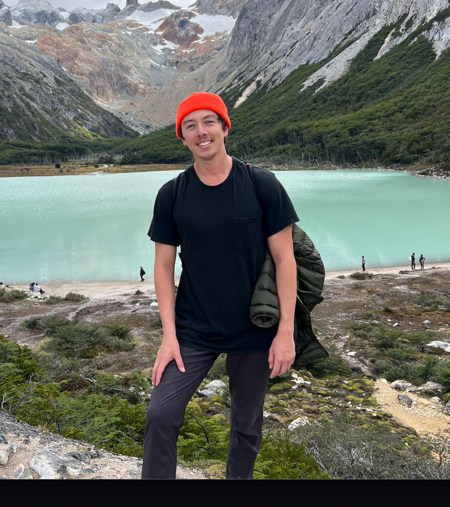

Adam Stockhoff
Business Development Representative
Professional Profile
Implementation consultant with five years of client collaboration software indu
stry experience, three years consulting leadership experience, two years of
client software support team mentoring experience. Bilingual professional skilled
in client relationship management and project implementation, looking to apply
my strengths towards a role as Developer.
Education
Bachelor of Science in Business Marketing
Minor in French Language
University of Kansas 2011 - 2015
Experience
Business Development Representative
Zoom / Denver, CO / June 2021 - January 2024
- Developed new strategies and collaborated daily with Account Executives
on targeting Zoom accounts and breaking into both new and existing
business driving close to 70k in Pipeline in 2022.
- Collaborated with BDR Enablement team to create effective outreach
sequences and email templates used by BDR teams across all segments.
- Aided Culture Crew efforts to increase engagement and career growth
opportunity within the BDR organization through various team building
activities during All Hands and Kick Offs.
- Mentored new associates as they finish onboarding and start their first
quarter as BDRs including 1 on 1 coaching as well as leading full team
enablement sessions.
Healthcare Consultant
Crowe LLP / Denver, CO / October 2020 - June 2021
- Developed new strategies with client counterparts to determine needs and development
action plans surrounding revenue increase efforts across all departments of client health systems.
- Analyzed EMR data to understand historical patient leveling and charge capture tactics
in order to provide opportunity for workflow optimization within the outpatient setting.
- Assisted in re-education efforts by creating user guides and managing client relations
throughout project optimization initiatives to maximize charge reimbursement at facility
and professional levels.
Consultant
Cerner Corporation / Kansas City, MO / May 2018 - October 2020
- Developed new strategies with client counterparts to determine needs and development action plans surrounding revenue increase efforts across all departments of client health systems.
- Analyzed EMR data to understand historical patient leveling and charge capture tactics in order to provide opportunity for workflow optimization within the outpatient setting.
- Assisted in re-education efforts by creating user guides and managing client relations throughout project optimization initiatives to maximize charge reimbursement at facility and professional levels.
Key Skills
- Client Relationship Building
- New Associate Mentoring
- Outstanding Presentation Skills
- Team Leadership
- Salesforce
- Problem Solving and Objection Handling
- Organization and Time Management
- ableau Analytics
- Project Leadership